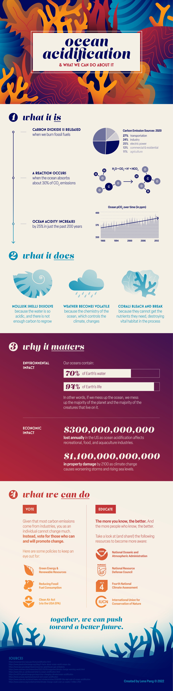

Ocean Acidification Infographic
12 December 2022 | Adobe Illustrator, 2084x8302 px
For this class assignment, we were tasked with choosing, researching, and visualizing a topic. Given my passion for climate change awareness, I picked ocean acidification: it's a pressing issue, but many people are not educated on exactly how pressing.
If you click here, you can view a PDF with my research, sources, and process for this infogrphic.
